来源：https://udxxg5rx5m.feishu.cn/docx/ABrsdK0kVoDjwQx3v4bcT4Hynad
生财这个圈子，
千万不要只是看看帖子，
把自己分享出去，
让更多人能连接到你，
会有意想不到的结果。
生财对我来说就是个转折点。
我是施仁，专注小众赛道项目。
一时不知该从哪里写，
这两年做的某些项目虽说跟生财没什么关系，
但合作的工作室，一些渠道的来源都是生财认识的朋友提供的，
而且这些在我项目的实操上也占了非常关键的一部分，
尤其去年，幸亏在生财有认识的朋友介绍资源，
才在一些关键问题上，有了非常简单的解决办法。
不然去年的项目完全卡在一个想破头都解决不了的困境里。
三个月放大操作，流水做了接近两百个。纯收益一百个。
那个项目属于昙花一现，就不在此分享了。
这次还很幸运的成了万赞中奖者，
亦仁送了一张门票，然后第七期结束，根据龙珠竟然还给了我分红。
简直了！
坚持在生财分享自己吧。
生财新的一年，
分享个今年在运作的项目给新圈友，
适合不想投入太多金钱成本的圈友自己做做。
需要花费一些精力和时间。
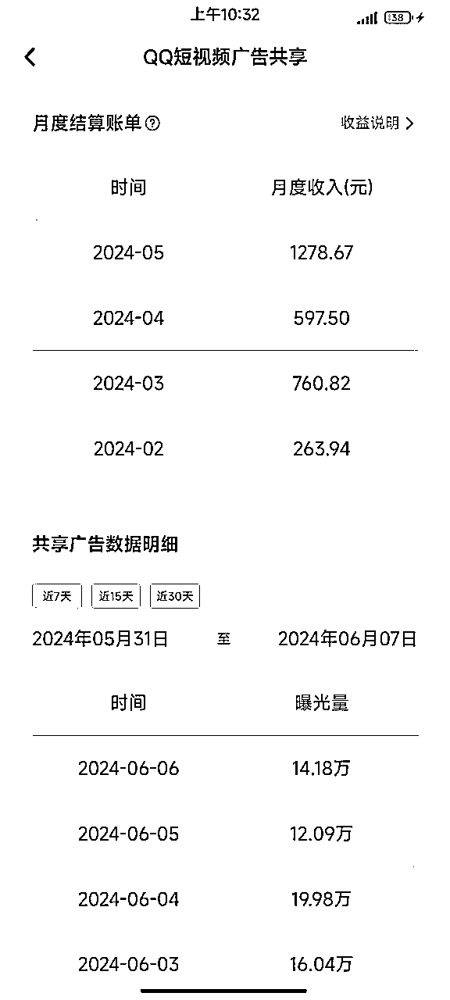
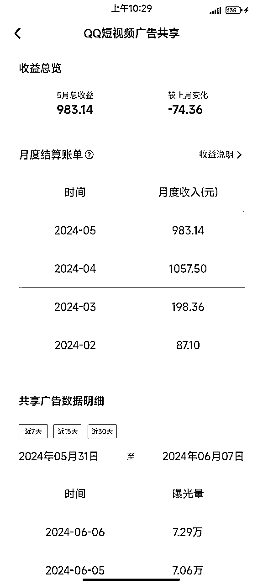
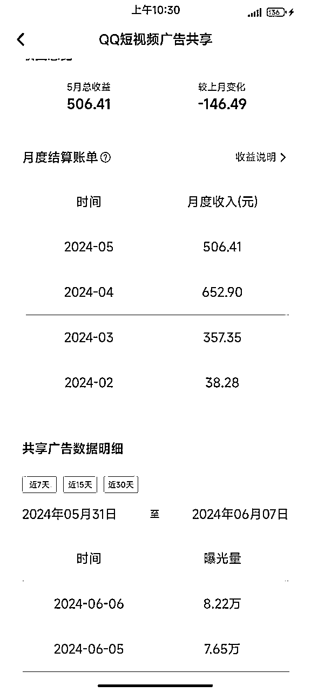
当然也有怎么做都没做起来的账号，
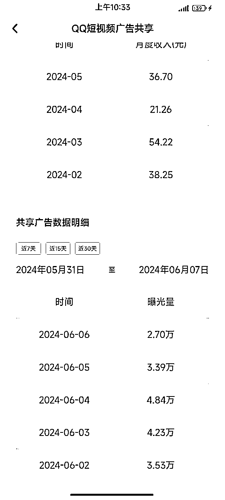
QQ短视频，原名QQ小世界。
去年年初做过一阵没拿到结果，
放弃了，
后来在生财看到有人说平台有了广告共享计划，
但那个时候正好在忙别的，于是也就搁置了。
今年过完年正在找项目，想起来这件事，
正好手里还有个小世界的发布软件，
可以搞一搞，
于是二月就开始研究，
也走了一些弯路，
测试几个月下来觉得收益还行，关键是可以放大操作。
目前工作室还在做的有36个号，每个号每个月收益大概在500-1500上下。
个别几个号收益破不了百。
我个人认为目前QQ短视频还是在处于发力阶段，
号还是比较好起的。
QQ注册目前就是需要手机号且短时间内不能频繁注册，并且也要注意ip，
我的方法就是先让别人帮忙注册，然后登录到我这边的APP上，
过大概一周再把QQ绑的手机号换绑成自己的手机号，
这样不用麻烦别人。
新QQ号得养号，多刷刷QQ短视频，
加加好友，切记切记❗️新注册之后不要频繁修改头像网名。
QQ聊天界面🔍关注【QQ短视频创作中服务号】，即可收到作品审核动态通知。
发布作品前，需要绑定密保手机号，不然会被安全打击，视频无法推荐。
注册好的账号，可以直接在https://qqzz.qq.com/public/login 进行登录
手机发一个号还好，多账号操作还是习惯用电脑。
我这边做的大部分是搬运，
抖快红里去找QQ短视频上没有的作者，
比如你在抖音找了一个作者A，
那你就在QQ短视频上搜这个作者A的名字，
搜不到就代表没有，
当然也会有这个作者在这个平台不叫这个名字，
那你就找一个这个作者两周内发布的作品去搜索，
一定不要最新的作品，
因为可能这个作者还没在QQ短视频平台上传，你未必搜得到，
如果名字、作品都没有这个作者，那你就可以考虑搬运这个作者的作品，
注意，并不是这个平台没有这个作者就可以无脑搬运了。
我发现很多人都会进入一个误区，
会认为这是我喜欢的作者，
他的作品搬到这个平台肯定也会有不少粉。
其实并不是的。
首先我不知道什么作品一定会火，
但是我可以告诉你什么作品平台不推荐，
模板、特效、图文轮播、灵感库等门槛较低的作品，
直接pass,
平台相对会更喜欢：
真人出镜的内容账号最好，
其次是真人配音，
领域上我不方便说太具体，自己可以去刷刷视频，看一下。
光真人出镜这一个标准，就能把QQ短视频上很多领域pass掉。
找到作者后，名字头像都改成对标作者，
个人建议，改的作者名最好后面加个字母，或者用户名里的其中一个字变成别的，
比如小李讲美食，改成小李说美食，
然后就可以进行对标搬运了，
作品发布前最好再进行一下去重，
我目前作品去重完全是通过cr操作的，
抽帧+一些微调。批量操作就行了。
上传作品封面一定不要用系统默认，自己挑一个吸引人的。
敲黑板，重点来了，
QQ号这种东西可以说人人都有，
手机QQ点短视频，左上角自己的头像，
进入QQ短视频主页，
点这里，成长中心，
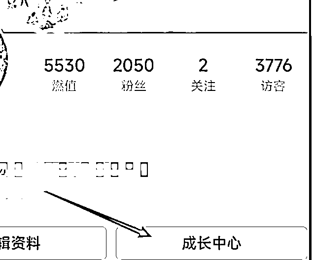
然后点任务中心，
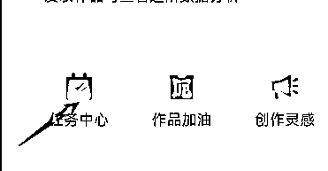
可以看到一些任务，
完成任务会获得火箭，
火箭有什么用呢，
就是可以给别人的作品进行助力，
长按火箭可以直接推十个。
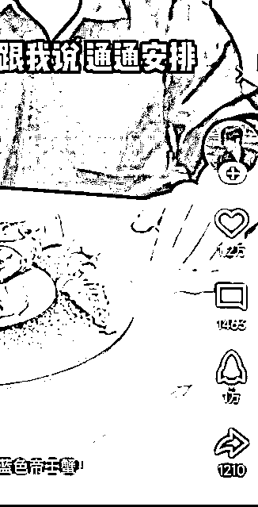
超级会员会有额外的任务奖励，
这个任务是有限的，
任务奖励全部消耗完火箭就成0了，
但是没关系不用慌，
只要你把火箭用成0，
平台还会给你一个破产补助的奖励，奖励5个火箭，
每天奖励三次，3*5=15，
相当于每个号每天依然会有15个火箭可以让你用来助力，
这种助力方式，一个号不要持续对一个号助力，效果会越来越不明显，
去年年初我第一次研究小世界的时候，
当时还有个刷粉的网站，
做了几个1000粉以上的号，
但是现在没有了。
如果那个朋友有相关的刷粉方式，也可以文章下面留个言。
这样就省去一个涨粉的步骤。
涨粉有一个高风险高回报的方法，
那就是擦边，
优点就是快速，可能一天两天就能涨到500粉，
缺点就是，就算涨到500粉，对账号后期的垂直也会有一定影响。
我个人建议如果用这种方法，粉丝涨到500就把之前的作品隐藏，
然后在个人列表立刻补一些垂直作品。
稳妥一点的方法就是发垂直内容，多个QQ号互相火箭助力，或者小小花钱投流一下。
正常的账号，这个周期大概2-3周完成，
数据好的账号1周就可以达到500粉，
官方偶尔还会进行推流，
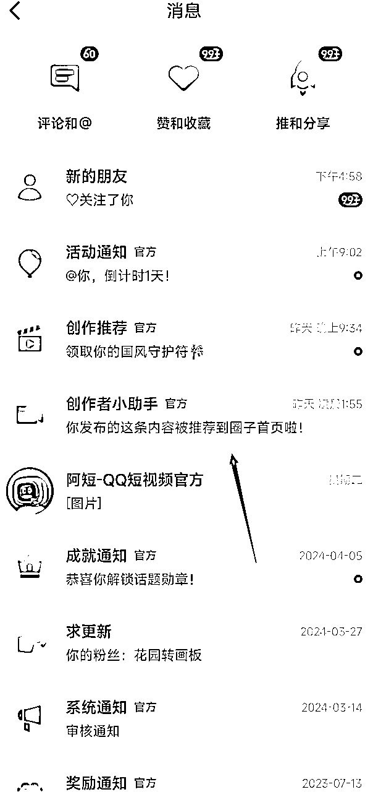
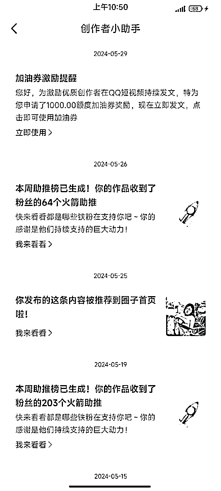
持续发布作品还有机会获取加油券，
用来推送自己的作品。
注意创作者小助手的通知消息。
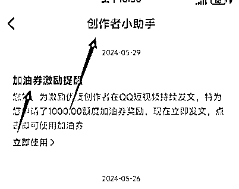
这里要注意，从你开始发视频的第一天起，
如果没有粉丝评论，那就用小号评论一条，然后作者回复小号的评论，
因为开通广告收益的要求里就有一条，
一个月内必须要有最低一条的回复评论，
这个条件看起来很好满足，
但是等你其他条件达标后，再去回复评论，
这个条件完成是有延时的，并不是你当时回复评论，条件就立刻达标，
一般要等3-7天，所以千万不要等其他条件达标再去做这个任务。
很浪费时间。
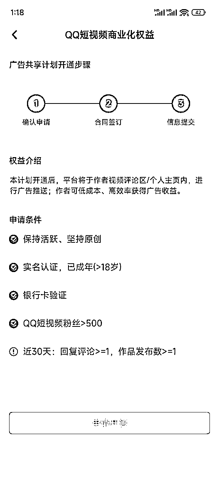
所有条件达标然后实名就可以开通了，
一定要记着不要急着先实名，
如果这个号废了还可以换号。
所有要求都达标，就可以在 成长中心→创作变现→广告共享计划里开通广告收益了，
开通后，记得在广告共享计划里，
下滑到最后，把评论区广告、个人主页下拉广告 两个开关都打开即可，
这样别人看你视频的时候就会有广告了。
而我们的收益就是从这两个广告位获取的。
每天尽量保持10-20个视频。
如果作品不多，考虑最早的视频删掉重发。
或者找同类型作品继续发。
先看看【QQ短视频创作中服务号】里是否有通知，
如果没任何提示，
可以在https://qqzz.qq.com/public/login【数据中心】查看发布前的审核状态。
【QQ短视频创作者中心】是一个致力于为创作者提供多元化信息和多样化生产工具的平台，目前主要功能模块包括：
如果你已开通QQ短视频创作者中心使用权限，可按以下流程登录。
创作者可通过首页，快速了解帐号基本数据
视频时长：不可以上传时长小于5秒或大于10分钟的视频
视频分辨率：≥720p
视频大小：最大可上传4G的视频
视频格式：MP4、FLV、F4V、WEBM、M4V、MOV、3GP、3G2
选择左侧「内容发布」，点击页面中间区域后可批量选择视频文件，或直接把视频文件拖拽至上传页面。
以下信息可根据实际所需情况来选择填写。
若不上传也未截取，发布视频后将默认将视频首帧作为封面图
填写完成视频信息后，点击“发布”并跳转至视频管理页面可进行查看。
平台将对视频进行转码，转码需要一定时间，一般与上传作品的时间等长，但不会对视频画质有影响。
目前封面图未设置比例限制和支持线上裁剪，为保证效果，请上传和视频尺寸相同的图片 封面。
支持筛选/删除作品，同步展示作品的审核状态
支持分作品删除/回复评论
支持创建作品合集，实现高效作品管理
常登录创作者中心，实时了解全站热门话题，快速获取平台活动信息让作品被更多人看到。
一定要多找作者多做账号，
一个人可以实名5个QQ，
那你就要按照10个号以上的标准去做，
比如你可以找朋友实名20个号，
那你就按照40个号去注册去找作者做。
因为到最后肯定会有一部分账号起不来。
起不来的号pass，
起来的号去实名开权益。
一定要记着多跟评论互动，
发作品的QQ一定要在自己手里，
账号是每天都要登录的，
如果用的别人的QQ，每天都要找朋友扫码登录，很麻烦。
我自己手里设备足够多，所以一个手机登录3-5个QQ。
手机不多的可以考虑用分身app分更多的QQ。
这有一个免费版的分身分享出来，只能安卓使用。
QQ短视频的自动发布软件也在里面。
使用教程在这里，功能比较多，所以教程在慢慢录制中，
需要的软件。
链接：https://pan.baidu.com/s/1vSW5zD8I1iGxg6ATSsUL5g?pwd=0809
提取码：0809
--来自百度网盘超级会员V8的分享
QQ短视频PC网址：https://qqzz.qq.com/public/login